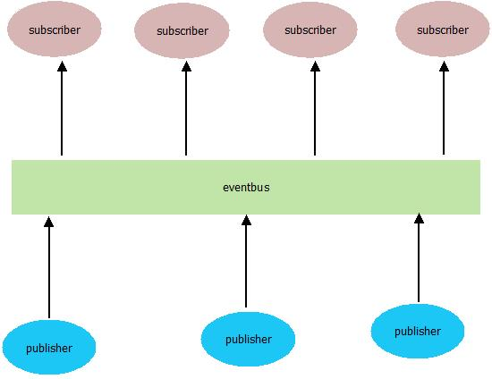
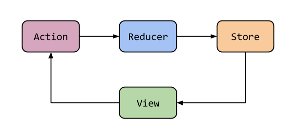
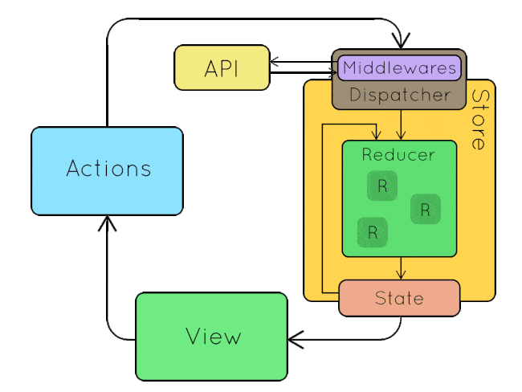

<!DOCTYPE html>
<html lang="en">
  <head>
    <meta charset="utf-8" />
    <meta name="viewport" content="width=device-width, initial-scale=1.0, maximum-scale=1.0, user-scalable=no" />

    <title>Занятие 34</title>
    <link rel="shortcut icon" href="./../favicon.ico"/>
    <link rel="stylesheet" href="./../dist/reveal.css" />
    <link rel="stylesheet" href="./../dist/theme/white.css" id="theme" />
    <link rel="stylesheet" href="./../css/highlight/zenburn.css" />
    <link rel="stylesheet" href="./../_assets/.reveal-md/styles.css" />

    <script>
      document.write('<script src="http://' + (location.host || 'localhost').split(':')[0] + ':35729/livereload.js?snipver=1"></' + 'script>');
    </script>
  </head>
  <body>
    <div class="reveal">
      <div class="slides"><section ><section data-markdown><script type="text/template">

# OTUS

## Javascript Basic

</script></section><section data-markdown><script type="text/template">

## Вопросы?

</script></section><section data-markdown><script type="text/template">

Какую задачу решает паттерн `Наблюдатель`?

</script></section><section data-markdown><script type="text/template">

Какое API у `EventEmitter` интерфейса?

</script></section><section data-markdown><script type="text/template">

Какую задачу решает паттерн `Посредник` ?

</script></section><section data-markdown><script type="text/template">

Чем `EventBus` отличается от `EventTarget` ?

</script></section></section><section  data-markdown><script type="text/template">

### Управление состоянием приложения, разработка redux

</script></section><section ><section data-markdown><script type="text/template">

### Сначала разберемся с задачей

</script></section><section data-markdown><script type="text/template">

**Состояние приложения** - набор всех переменных/параметров/свойств, которые определяют внешний вид и поведение приложения в каждый конкретный момент времени.

Например:

- какая страница сейчас открыта
- какой элемент сейчас активен
- что пользователь ввел в поле поиска

</script></section><section data-markdown><script type="text/template">

На уровне кода `состояние` - это совокупность переменных и свойств объектов.

</script></section><section data-markdown><script type="text/template">

Где находится состояние в системе, построенной на основе `EventBus` ?



</script></section><section data-markdown><script type="text/template">

В такой системе состояние оказывается `размазанным` по модулям. Это подходит для приложений, которые являются набором независимых блоков. Но при этом отображение одного модуля, не может использовать данные из другого модуля (т.к. модули друг о друге не знают).

</script></section><section data-markdown><script type="text/template">

Поэтому появилась идея "централизованного хранилища" - единого объекта, который хранит в себе все состояние приложения, и обладает всей информацией, которая влияет на приложение.

</script></section><section data-markdown><script type="text/template">

Самым базовым вариантом реализации является использование глобального объекта и глобальных переменных, которые доступны в любой части приложения.

</script></section><section data-markdown><script type="text/template">

Проблема с таким подходом:

- кто угодно может вносить неконтролируемые изменения
- сложно отследить факт изменения переменных состояния (вспоминаем про обновление представления)

</script></section><section data-markdown><script type="text/template">

### Вопросы?

</script></section></section><section ><section data-markdown><script type="text/template">

### Redux

</script></section><section data-markdown><script type="text/template">

[Мотивация:](https://rajdee.gitbooks.io/redux-in-russian/content/docs/introduction/Motivation.html)

Redux пытается сделать изменения состояния предсказуемыми, путем введения некоторых ограничений на то, как и когда могут произойти обновления. Эти ограничения отражены в трех принципах Redux.

</script></section><section data-markdown><script type="text/template">

### [Redux - 3 принципа](https://rajdee.gitbooks.io/redux-in-russian/content/docs/introduction/ThreePrinciples.html)

- **Единственный источник правды**  
  Состояние всего вашего приложения сохранено в дереве объектов внутри одного стора.
- **Состояние только для чтения**  
  Единственный способ изменить состояние — это применить экшен — объект, который описывает, что случится.
- **Мутации написаны, как чистые функции**  
  Для определения того, как дерево состояния будет трансформировано экшенами, вы пишете чистые редюсеры.

</script></section><section data-markdown><script type="text/template">

### Вопросы?

</script></section><section data-markdown><script type="text/template">

## Redux - Термины

</script></section><section data-markdown><script type="text/template">

### State

Объект в котором хранятся данные приложения

```ts
interface GameOfLifeState {
  field: boolean[][];
  isRunning: boolean;
  speed: number;
}
```

</script></section><section data-markdown><script type="text/template">

### [Action](https://rajdee.gitbooks.io/redux-in-russian/content/docs/basics/Actions.html)

Объект, который описывает, что происходит в системе

```ts
interface Action<T = any> {
  type: T;
  payload?: any;
}
```

</script></section><section data-markdown><script type="text/template">

### Action Creator (Генератор событий)

Обычная функция, которая возвращает объект `action`. Нужна чтобы писать меньше кода и делать меньше ошибок.

```ts
function changeCellState(x: number, y: number) {
  return {
    type: "CHANGE_CELL_STATE",
    payload: { x, y },
  };
}
```

</script></section><section data-markdown><script type="text/template">

### [Reducer](https://rajdee.gitbooks.io/redux-in-russian/content/docs/basics/Reducers.html)

Функция (чистая), которая возвращает новый state как реакцию на action

```ts
type Reducer<S = any, A extends Action = AnyAction> = (
  state: S | undefined,
  action: A
) => S;
```

</script></section><section data-markdown><script type="text/template">

### Reducer

```ts
function reducer(state: GameOfLifeState, action): GameOfLifeState {
  switch (action.type) {
    case "START_GAME": {
      return {
        ...state,
        isRunning: true,
      };
    }
    case "STOP_GAME": {
      return {
        ...state,
        isRunning: false,
      };
    }
    // ...
    default: {
      return state;
    }
  }
}
```

</script></section><section data-markdown><script type="text/template">

### [Store](https://rajdee.gitbooks.io/redux-in-russian/content/docs/basics/Store.html)

Oбъект, который соединяет эти части вместе:

- содержит состояние приложения (application state);
- предоставляет доступ к состоянию с помощью getState();
- предоставляет возможность обновления состояния с помощью dispatch(action);
- обрабатывает отмену регистрации слушателей с помощью функции, возвращаемой subscribe(listener).

</script></section><section data-markdown><script type="text/template">



</script></section><section data-markdown><script type="text/template">

### Вопросы?

</script></section></section><section ><section data-markdown><script type="text/template">

[Практика](https://codesandbox.io/s/github/vvscode/otus--javascript-basic/tree/master/lessons/lesson34/code/reduxBasic)

</script></section><section data-markdown><script type="text/template">

### Вопросы?

</script></section></section><section ><section data-markdown><script type="text/template">

### Это еще не все

</script></section><section data-markdown><script type="text/template">

### [Middlewares](https://rajdee.gitbooks.io/redux-in-russian/content/docs/advanced/Middleware.html)

Предоставляют стороннюю точку расширения, между отправкой экшена и моментом, когда этот экшен достигает редюсера. Люди используют Redux-мидлвары для логирования, сообщения об ошибках, общения с асинхронным API, роутинга и т.д.

</script></section><section data-markdown><script type="text/template">



</script></section><section data-markdown><script type="text/template">

### [combineReducers](https://rajdee.gitbooks.io/redux-in-russian/content/docs/recipes/reducers/UsingCombineReducers.html)

</script></section><section data-markdown><script type="text/template">

```ts
type UsersState = {
  name: string;
  score: number;
}[];

const defaultUsersState = [];

function usersReducer(
  state: UsersState = defaultUsersState,
  action: Action
): UsersState {
  switch (action.type) {
    case "ADD_USER":
      return [...state, action.payload];
    default:
      return state;
  }
}
```

</script></section><section data-markdown><script type="text/template">

```ts
interface State {
  users: // ... <- usersReducer
  gameField: // ... <- gameFieldReducer
}
```

</script></section><section data-markdown><script type="text/template">

```ts
type UsersState = {
  name: string;
  score: number;
}[];

const defaultUsersState = [];

function usersReducer(
  state: UsersState = defaultUsersState,
  action: Action
): UsersState {
  switch (action.type) {
    case "ADD_USER":
      return [...state, action.payload];
    default:
      return state;
  }
}
```

</script></section><section data-markdown><script type="text/template">

```ts
const reducer = combineReducers([
  users: usersReducer,
  gameField: gameFieldReducer,
]);
```

</script></section><section data-markdown><script type="text/template">

```ts
const reducer = combineReducers([
  users: usersReducer,
  gameField: gameFieldReducer,
]);
```

</script></section><section data-markdown><script type="text/template">

Превращает объект, значения которого являются разными функциями-reducer, в единую функцию reducer. Он будет вызывать каждый дочерний reducer и собирать их результаты
в единый объект состояния, ключи которого соответствуют ключам переданных дочерних reducer.

</script></section><section data-markdown><script type="text/template">

Условно тип можно было бы описать как

```ts
type CombineReducer<ReducersConfig = any, Action = { type: any }> = (
  config: {
    [key in keyof ReducersConfig]: (
      state: ReducersConfig[key] | undefined,
      Action
    ) => ReducersConfig[key];
  }
) => (
  state:
    | {
        [key in keyof ReducersConfig]: ReducersConfig[key];
      }
    | undefined,
  action: Action
) => {
  [key in keyof ReducersConfig]: ReducersConfig[key];
};
```

</script></section><section data-markdown><script type="text/template">

### Вопросы?

</script></section></section><section ><section data-markdown><script type="text/template">

### Домашнее задание:

</script></section><section data-markdown><script type="text/template">

1. Создать новый репозиторий и настроить в нем необходимые вещи
2. Реализовать полный интерфейс функции `createStore` (c поддержкой middlewares). Покрыть реализацию тестами с покрытием от 80%.
3. Реализовать функцию `combineReducers` и покрыть ее тестами с покрытием от 80%.
4. Добавить в проект `README.md` файл с описанием интерфейса, который реализуется этими функциями.

Все пункты являются обязательными.

</script></section></section><section  data-markdown><script type="text/template">

Дополнительные материалы:

- [Изучаем Redux и пишем свой Mini-Redux](https://stepansuvorov.com/blog/2017/05/learn-redux/)
- [Изучаем Redux на примере создания мини-Redux](https://medium.com/devschacht/jakob-lind-learn-redux-by-coding-a-mini-redux-d1a58e830514)
- [Описание концепта Middleware](https://rajdee.gitbooks.io/redux-in-russian/content/docs/advanced/Middleware.html)

</script></section><section  data-markdown><script type="text/template">

### Опрос о занятии
</script></section></div>
    </div>

    <script src="./../dist/reveal.js"></script>

    <script src="./../plugin/markdown/markdown.js"></script>
    <script src="./../plugin/highlight/highlight.js"></script>
    <script src="./../plugin/zoom/zoom.js"></script>
    <script src="./../plugin/notes/notes.js"></script>
    <script src="./../plugin/math/math.js"></script>
    <script>
      function extend() {
        var target = {};
        for (var i = 0; i < arguments.length; i++) {
          var source = arguments[i];
          for (var key in source) {
            if (source.hasOwnProperty(key)) {
              target[key] = source[key];
            }
          }
        }
        return target;
      }

      // default options to init reveal.js
      var defaultOptions = {
        controls: true,
        progress: true,
        history: true,
        center: true,
        transition: 'default', // none/fade/slide/convex/concave/zoom
        plugins: [
          RevealMarkdown,
          RevealHighlight,
          RevealZoom,
          RevealNotes,
          RevealMath
        ]
      };

      // options from URL query string
      var queryOptions = Reveal().getQueryHash() || {};

      var options = extend(defaultOptions, {"slideNumber":true,"hash":true,"history":true,"backgroundTransition":"fade","width":"80%"}, queryOptions);
    </script>


    <script>
      Reveal.initialize(options);
    </script>
  </body>
</html>
